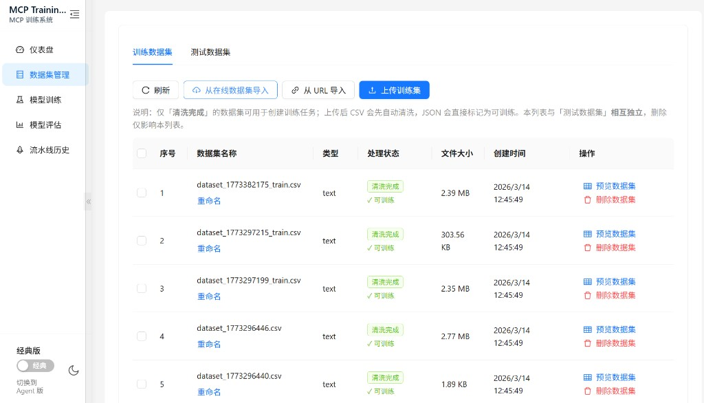
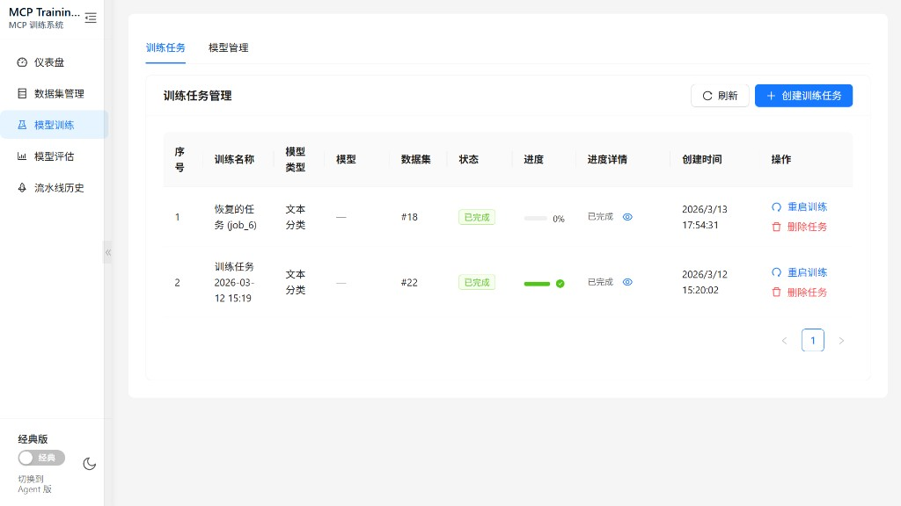
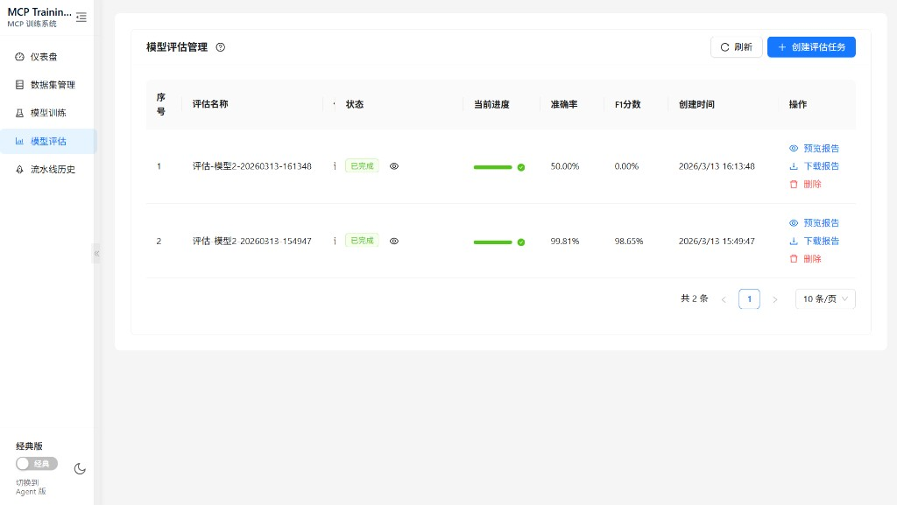
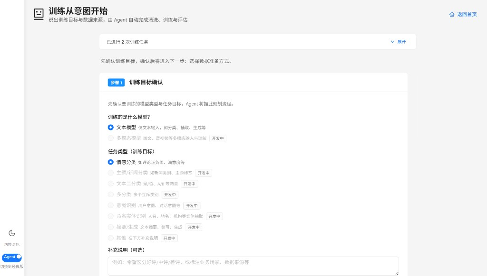
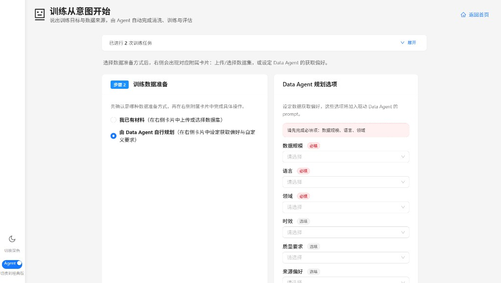

数据集与清洗
本地上传或 URL 导入，清洗流程可重复执行，输出就绪数据集供训练选用。
Capabilities
从数据进入系统到报告产出，每一步都可查看状态、日志与结果——既适合日常实验，也适合对外展示产品完成度。
本地上传或 URL 导入，清洗流程可重复执行，输出就绪数据集供训练选用。
经典工作台查看进度、日志与生命周期操作，训练结束后模型入库可评估。
指标与 HTML 报告可预览与下载，失败时保留原因字段便于排错。
先确认目标与数据，再触发流水线；步骤可视化，贴合「产品向导」体验。
Coordinator 异步编排清洗、训练与评估，实例状态持久化，可刷新恢复进度。
Agent 与经典界面共享 PostgreSQL / Redis，切换视图不丢结果。
Product tour
以下六张图与首页主视觉一致，覆盖工作台、数据、训练、评估与 Agent 配置。替换同名 PNG 即可更新整站展示。





docs/images/：01-workflow.png、02-datasets.png、
03-training-jobs.png、04-evaluation.png、05-agent-canvas.png、
06-data-agent-plan.png。
Stack
Go 负责编排与 API，React 负责交互，Python 侧承载训练脚本与模型生态。